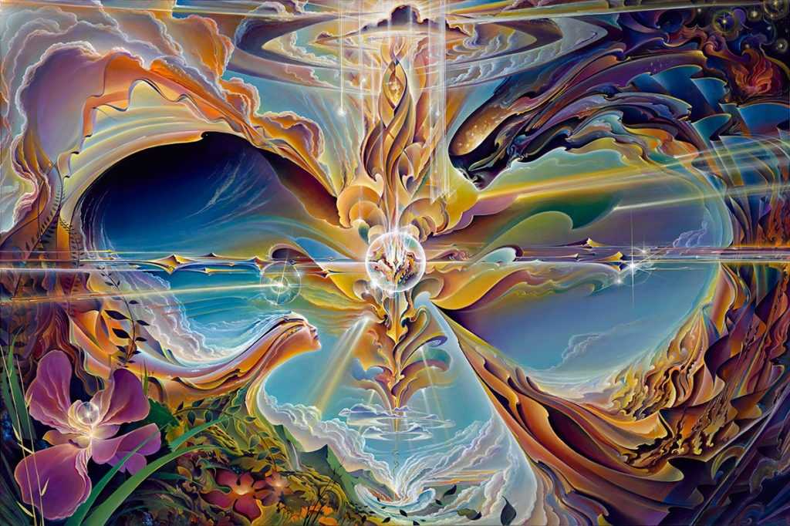
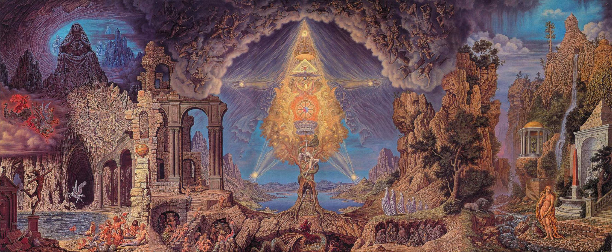

What is Visionary Art?
Visionary art is art that attempts to transcend the physical world and portray a wider vision of reality. Often times, visionary art includes themes such as:
- Spiritual Experiences
- Mystical Encounters
- The Ego
- The Sense of Self
- Surrealism
- Cubism
- Sacred Geometry
Inspiration
The goal of most visionary artists is to make the soul perceptible. The artist generally tries to make their inner truths (thoughts, fears, loves, intentions) visible, audible, or sensible in any way that brings them to the material world for others to see. In this way, every work of art embodies the visions of its creator, and it gives the viewer a glimpse into their personal truths.